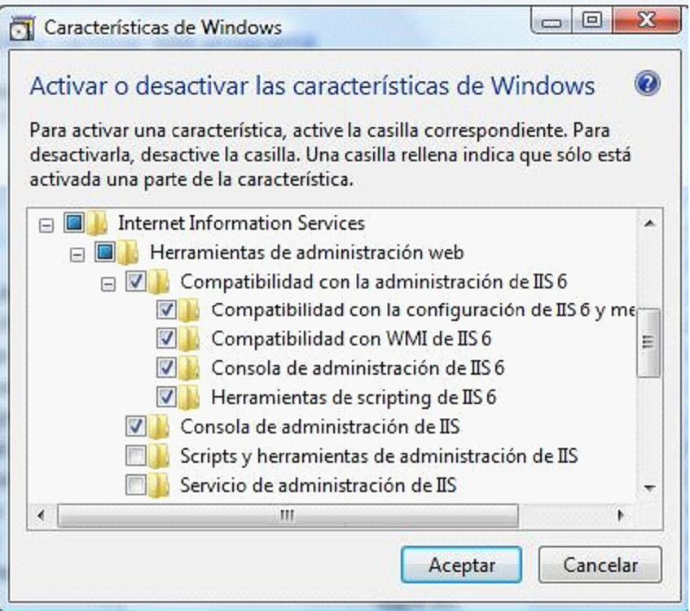
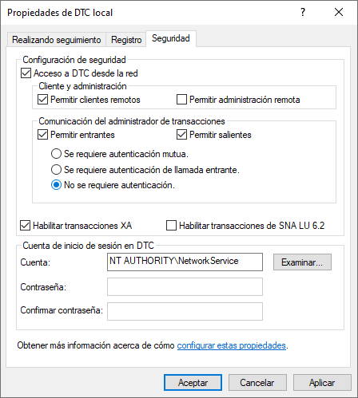

El servidor donde se instale BIZUIT Dashboard Server 4.0 debe contar con:
- Windows 8/ Windows 10/ Windows Server 2012/ Windows Server 2016/ Windows Server 2019
- Microsoft .NET Framework v4.5.2 o superior.
- IIS 7.0 o superior (según sistema operativo)
- El servidor IIS debe tener habilitadas las herramientas de compatibilidad con la administración de IIS 6:

- Acceso a un servidor SMTP, si es local el servicio SMTP de IIS debe estar activo y configurado
- En caso de instalarse sobre Windows 10, Windows Server 2012 o superiores, verifique que en la opción "Programas y Características de Windows" se encuentren tildadas las siguientes opciones:


Anterior / Siguiente